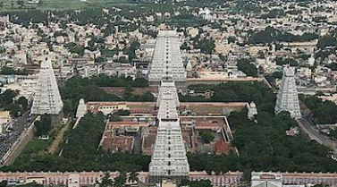

Arunachaleshwar
The Annamalaiyar Temple, also known as Arunachaleswarar Temple, is a significant Hindu temple dedicated to Lord Shiva located in Tiruvannamalai, Tamil Nadu, India. It's considered one of the five Pancha Bhoota Sthalas, representing the element of fire (Agni). The temple complex is vast, covering around 25 acres and featuring intricate Dravidian architecture with towering gopurams and numerous shrines.